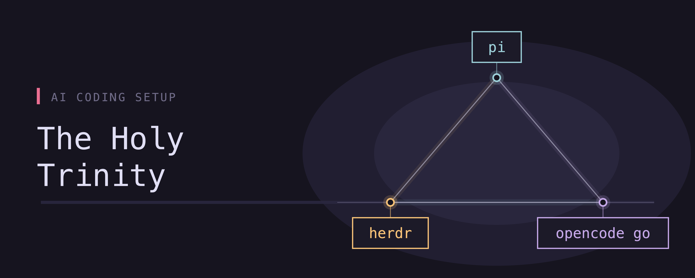
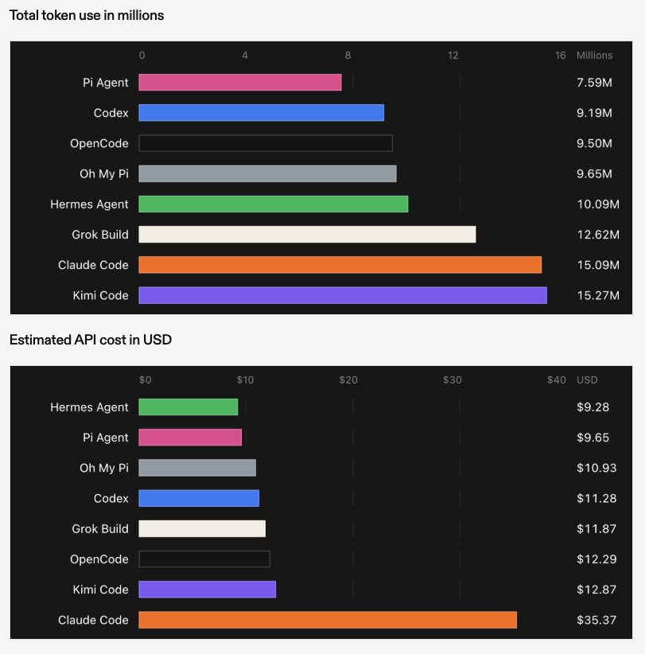
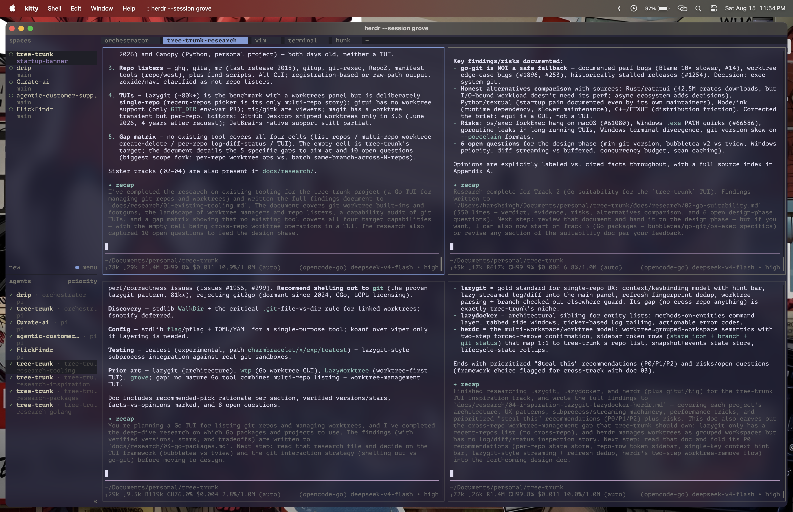

tldr; my current AI coding setup is Pi, Opencode Go and Herdr
The boom in harness engineering#
This year, we are seeing a boom in harness engineering. What initially started as simple scaffolding around an LLM is now one of the most sophisticated and highly sought-after systems. Along with this, LLMs also became more and more capable of taking on more coding and software engineering tasks, going from mere assistants and completion tools to full drivers of codebases. Not only have models become more capable but also more accessible in terms of costing. For example the early reasoning models from OpenAI, like GPT-4 as well as O-series, cost $60 or more per million tokens output. Now models with similar capabilities only cost around ~$10 per million tokens and there are some open source offerings going even cheaper for better performance.
Early last year, with the release of Claude Code, everything changed. It was the first major harness that was released, specifically targeted towards coding tasks. Co-pilot existed before but it was only meant to be a chat assistant more than an agent that could take actions on the code. Since then we've had hundreds of harnesses released. Each iterating upon weaknesses of its predecessors, nearly perfecting (nearly) the process today. The remaining gaps are mostly about lack of personalization and a lack of understanding of software engineering workflows for specific companies and engineers. There's also a line of applications where there are genuine limitations, like those involving a lot of hardware and firmware development, which I cannot comment on since I don't have much knowledge there. But for all the gaps in software engineering, this is where a lot of engineers today continue to build and fill out these gaps by building out agentic workflows, tools, skills, and extensions.
In this article, I want to share my own setup, experiments and what has / hasn't worked for me. As mentioned earlier one gap of current systems is lack of personalization, so take this with a grain of salt. My setup works for me and may not work for you or you may have another setup that works for you better. Ultimately the idea is to tinker around and find what's best for you and build according to that. I just want to highlight what ideas and paths can be taken when you're looking to build something for yourself.
The harness#
The harness is the moat. The harness is the system. No matter what you build and no matter how much effort you put into it, it all depends on what harness you choose to run it on top of. Today there are hundreds of options and the most popular ones still make around eight to ten of those. Claude Code has been a standout harness but since then there have been those that have improved upon and iterated really well.
When I first started using AI for coding, I was at a large company that used Github Co-pilot. Any choice for me beyond Co-pilot was an upgrade. Not that Co-pilot is bad but there is a lot that needs to be improved there or at least had to be improved back when I was using it last year.

Pi - The minimalist king#
The pi coding agent has quickly become one of the favorites. The reason is that it favors minimalism over out-of-the-box constructs and everything else can be added as an extension. One of the best parts is that pi can edit and extend itself upon a user's request. It has full access to its own prompts, its own tools, as well as an extension library that it can build out. In the long run this ability becomes very crucial as workflows keep evolving and the harness needs to keep up.
Setting up Pi#
Setting up Pi is a fun exercise because you're essentially working with a blank slate. It does not natively support the ideas of subagents, MCP servers, or plug-ins. What you do get though is extensions. You can ask Pi to build an extension for itself or turn to the Pi package manager, which allows installing open source extensions. Not only can you customize and extend its capabilities but you can also customize the TUI itself to make it look more suitable for your workflows.
Here is a list of extensions that I use:
- pi-mcp-adapter: allows the agent loop to connect to MCP servers. I like to keep this minimal and therefore I only use context7, which allows looking up most recent documentation for frameworks and libraries and the other one I use is Pydantic logfire, which enables smoother debugging.
- pi-web-access: this is a necessity because being able to access the web was one of the core capabilities that made agents famous in the first place. Again you can customize this as much as you need to, by either checking other options or building one out for yourself.
- graphify-pi: allows the agent to generate knowledge graphs for code bases and knowledge bases and then also provides the capability to query these graphs. Very useful for documentation, setting up other code bases, as well as building out a personal vault.
There are some other smaller ones like raw-paste, usage-extension, and files-widget but these are mostly simple enough and work better for my flow. The ones listed above, I recommend.
There's also a list of skills which are not specific to Pi but as you keep working ahead these also become very important in most of the engineering tasks. There are some things that you do repeatedly and it's best to create a workflow out of them through a skill. Here's a few that I use:
caveman: a very simple idea but a very effective outcome. Essentially the model speaks like a "caveman" and therefore uses fewer tokens (The office, S8 E2). In some cases it can save up to 65% tokens for the same outputs (as claimed on their GitHub repository).
few word do trick herdr: Herdr is a terminal multiplexer just like tmux, but specifically for agents and this skill basically allows the Pi agent to control the terminal. More on this later in the article.
session-recap: if you work through long sessions, having a recap at the end of each output is very helpful, just lets you remain in the loop.
skill-creator: this is a skill that teaches the agent how to create more custom skills. It's not really mandatory but helps the agent keep all the skills it creates streamlined and consistent.
grill-me: if you're struggling with maintaining an understanding of your project, this is the perfect skill for you. Basically every time you ask the agent to plan something, it will counteract with questions to ensure that the planning goes in depth and with all the right details. This is one of the many skills by Matt Pocock, and you should definitely check some of his other contributions out.
Pi also has access to its own system prompt as well as its tools, something that, as you work through, you will have the capability to customize at any time to suit your flows. Currently I have not customized anything here as I like to keep the baseline capability minimal and limit all my customizations to the extensions and skills.
The reason why I love the Pi coding agent is because coding with AI and AI in general was always sold as an entity that could personalize to you. So far with all the other coding harnesses, no matter how capable they may be, this was not the case. You always need to adapt to how these agents worked but Pi turned out to be the first one which could easily adapt to my workflows and my style.
This is almost starting to sound like a sponsored post but I assure you it is not. Pi also stands out for its efficiency with token use and costing. A detailed study from Composio tested several harnesses on the same set of tasks and found that Pi consistently ranked very high in the list for lowest token usage as well as lowest time to completion.

Subscriptions for LLMs#
Alongside harnesses there are also several options today that allow you to access a gateway to several highly capable LLMs. Some are specific to providers such as Claude Pro/Max or the Codex Pro/Plus subscription, which allows access to OpenAI models.
There are also several provider-agnostic options which, in my opinion, should be the top preference today. I personally use opencode go, which also provides a zen version. Some other popular options include:
- ollama cloud
- command code
- cline
.. and a lot more
Again this choice depends a lot more on how much you are willing to pay and which models work best for you. Different models react to different styles in different ways and therefore this is something that you need to experiment with.
Currently what works really well for me is the Opencode Go subscription, which is considerably on the cheaper side ($10/month) of the spectrum and provides very generous usage on the open-source models. I have been using the new Deepseek v4-flash and v4-pro models quite extensively alongside the GLM models. Even with heavy usage I have never hit the session limit (this is also attributed to other parts of my setup, like the skills and the fact that I use the Pi agent, which is very token efficient). I also have the Claude Pro subscription (mainly for chat and cowork) which I only use when I need very heavy reasoning work.
Opencode also has the Zen version of their subscription, which is based on usage credits. It provides access to many more models than Go does but it can turn out to be expensive very quickly as it is based on usage.
Herdr: tmux for agents#
One focus for myself this year has been to move to a more terminal-based coding setup. I moved from using VS Code and Cursor to neovim. If you work in this ecosystem, you would very well be aware of tmux, which is a terminal multiplexer. It basically allows persistent sessions of terminals working together in windows and panes. Working on the terminal also allowed me to use Opencode and Pi better because they primarily work through a TUI on the terminal.
Herdr is a new terminal multiplexer which is specifically built with agents in mind. It allows easier interactions with workspaces, which encapsulate the panes and windows, and also set up git worktrees as sub-workspaces to the main workspace. It also neatly lists out all the active agents and classifies the ones that are in progress, require intervention, or have completed their tasks.
Here is the best part. It comes built in with a skill that the coding agents can use to control Herdr. This is the primary reason why I don't use any extension that allows sub-agents within Pi. Since Pi can use herdr, it can launch other instances of Pi, or even other agents to offload and delegate some tasks. This creates a clean separation of concerns. One orchestrator agent can effectively launch multiple agents within their own worktrees, and you can navigate between each workspace easily. No sub agents run in the background, making it easier to validate outputs.

There is a lot of potential with what you can do with herdr. I recommend checking it out and running a few experiments yourself.
The Holy Trinity#
My current setup involves:
- Pi for harness
- Opencode Go for access to LLMs
- Herdr for orchestration and handoffs
This is nowhere near perfect, since I am still tinkering with it everyday. But so far, this gives me a fine balance between automation speed and control. The agents take up a lot more responsibility and work concurrently, but I am still able to validate and correct through the work.
Like I mentioned before, this is what works for me and my working style. This may not work the same way for you. I hope you take away from this that experimentation is the core and building out customized workflows is easier than ever. Have fun!